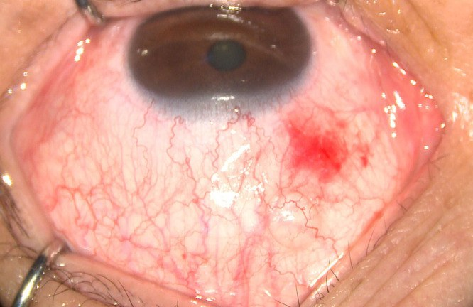
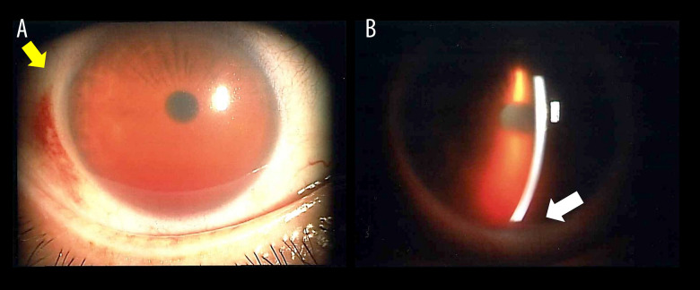
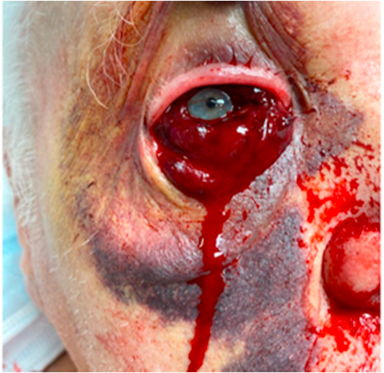

1449 — Tiêm nội nhãn ở bệnh nhân dùng thuốc chống đông/kháng kết tập tiểu cầu: ngừng hay tiếp tục? / Intravitreal injection in patients on anticoagulants or antiplatelets
Tags: pattern:xuat-huyet-duoi-ket-mac pattern:hyphema pattern:xuat-huyet-dich-kinh pattern:xuat-huyet-duoi-vong-mac pattern:xuat-huyet-hac-mac vung:mat vung:ket-mac vung:tien-phong vung:dich-kinh vung:vong-mac protocol:tiem-noi-nhan protocol:INR protocol:khang-dong protocol:antiplatelet
Mức chắc chắn (certainty): tổng hợp y văn (literature synthesis) — đọc toàn văn 3 bài mở (2 ca nguyên văn + 1 thử nghiệm ngẫu nhiên 2026) và abstract/đoàn hệ của 6 nghiên cứu lớn; không có thử nghiệm ngẫu nhiên nào so sánh "ngừng" với "tiếp tục" thuốc chống đông trước tiêm nội nhãn (không thể làm vì biến cố nặng quá hiếm). Các ngưỡng dưới đây là suy luận (inference) từ đoàn hệ lớn + dược lý, ghi rõ tại chỗ.
1. Tổng quan bệnh học – cơ chế hình ảnh – vì sao "chảy máu dưới kết mạc" lại khác "chảy máu trong mắt"
1.1. Ba tầng cầm máu, ba loại thuốc, ba kiểu chảy máu
- Cầm máu tiên phát (primary haemostasis) do tiểu cầu đảm nhiệm ở kết mạc – củng mạc (mô mềm, mao mạch nông). Aspirin ức chế không hồi phục COX-1 → giảm thromboxane A₂; clopidogrel/prasugrel/ticagrelor ức chế không hồi phục P2Y12. Vì tiểu cầu sống 7–10 ngày, hiệu lực thuốc kéo dài suốt đời sống tiểu cầu dù nồng độ thuốc trong máu đã hết.
- Thác đông máu (coagulation cascade) quyết định cục máu đông bền trong lòng mạch. Warfarin ức chế VKORC1 → giảm yếu tố II, VII, IX, X (nửa đời hiệu dụng 36–42 giờ, nên INR phản ánh trạng thái 2–3 ngày trước); DOAC (apixaban, rivaroxaban, edoxaban ức chế Xa; dabigatran ức chế thrombin) có nửa đời ~10–14 giờ ở người chức năng thận bình thường.
- Tiêu sợi huyết (fibrinolysis) quyết định máu đã đông tan nhanh hay chậm — đây là lý do máu dưới kết mạc đổi màu vàng sau 1–2 tuần (hemoglobin → bilirubin).
Hệ quả lâm sàng: thuốc kháng kết tập tiểu cầu làm tăng chủ yếu xuất huyết dưới kết mạc (subconjunctival haemorrhage, SCH) — biến cố lành tính, tự khỏi; thuốc chống đông (đặc biệt warfarin) mới là yếu tố làm tăng xuất huyết trong mắt (dịch kính, dưới võng mạc) ở mắt có màng tân mạch dễ vỡ.
1.2. Vì sao SCH gặp ở 40–70% người tiêm — kể cả KHÔNG dùng thuốc
- Kim 27–30G xuyên kết mạc + Tenon ở 3,5–4,0 mm sau rìa giác mạc, nơi có đám rối mạch máu thượng củng mạc dày. Khoang dưới kết mạc lỏng, dễ bóc tách, nên chỉ 0,5–2 mL máu đã loang 360° và thấm ra mi → trông "khủng khiếp" nhưng không ảnh hưởng thị lực.
- Tỷ lệ SCH 41,2% ở nhóm xem video giáo dục và 69,2% ở nhóm chứng trong một RCT 103 bệnh nhân tiêm anti-VEGF lần đầu (PMC13102109, 2026) — không có bệnh nhân nào dùng thuốc chống đông bị biến chứng nặng trong nghiên cứu này. Nhưng chính nghiên cứu đó cho thấy dùng thuốc chống đông làm tăng SCH: OR 3,252 (95% CI 1,166–9,071; p = 0,024).
- Loạt 80 mũi tiêm ở người dùng kháng vitamin K hoặc kháng kết tập tiểu cầu: SCH nhỏ 45%, không ca nào xuất huyết dưới kết mạc bán phần hay xuất huyết dịch kính (PMID 18351536, 2008).
1.3. Vì sao xuất huyết ĐE DỌA THỊ LỰC lại hiếm — và khi nào nó xảy ra
- Đường vào pars plana tương đối vô mạch, vết kim 30G tự bít khi rút; 0,05 mL dịch tiêm chỉ làm nhãn áp tăng thoáng qua vài phút. Vì vậy không có lý do cơ học để chảy máu ồ ạt chỉ vì INR 2,5.
- Xuất huyết nặng xảy ra khi kim chạm mạch máu bất thường:
- Chạm màng tân mạch (CNV) hoặc polyp (PCV) đang hoạt động → xuất huyết dưới võng mạc/dịch kính đột phá (breakthrough vitreous haemorrhage). Trong AMD có xuất huyết dưới hoàng điểm lớn, dùng thuốc chống đông là yếu tố nguy cơ độc lập cho xuất huyết dịch kính đột phá (p = 0,014); thể PCV có OR 35,01, và diện xuất huyết 22,7 ± 12,4 DA vs 5,4 ± 6,9 DA (PMID 30002432, 2018).
- Chạm mạch thể mi/hắc mạc (kim quá ra sau, mắt xoay) → xuất huyết hắc mạc (suprachoroidal haemorrhage) — đau dữ dội, tiền phòng nông, khối sẫm màu; hiếm nhưng mù.
- Chạm mống mắt/thể mi (mắt đã mổ, tiền phòng nông) → hyphema; loạt 26.184 mũi ghi nhận 3 ca hyphema ≈ 1/10.000, 2/3 ca đang dùng warfarin + aspirin liều thấp (PMID 25389692, 2011).
- Bằng chứng "không ngừng thuốc": đoàn hệ 520 bệnh nhân/675 mắt/3.106 mũi — 548 mũi ở người dùng warfarin, 523 mũi clopidogrel, 1.254 mũi aspirin — 0 biến chứng xuất huyết (xuất huyết hắc mạc, dịch kính, hoặc tăng xuất huyết dưới hoàng điểm); giới hạn tin cậy trên của tỷ lệ biến cố chỉ 0,37–0,88% tùy nhóm (PMID 20924260, 2010).
- Warfarin so với DOAC: ở bệnh nhân AMD + rung nhĩ theo dõi 5 năm, warfarin làm tăng xuất huyết hoàng điểm RR 1,86 (1,47–2,35), xuất huyết dịch kính RR 2,22 (1,51–3,26) và chuyển dạng tân mạch RR 1,25 (1,14–1,38) so với DOAC; không khác biệt biến cố chảy máu toàn thân nặng (PMID 39116948, 2025). Đây là lý do ưu tiên DOAC khi có lựa chọn — không phải lý do ngừng thuốc.
1.4. Vì sao "ngừng thuốc cho chắc" lại là quyết định SAI
- Ngừng kháng kết tập tiểu cầu ở người vừa đặt stent mạch vành có thể gây huyết khối stent — tử vong 20–40%, cao hơn hàng nghìn lần nguy cơ xuất huyết nặng sau tiêm.
- Ngừng warfarin ở bệnh nhân van tim cơ học hoặc rung nhĩ có điểm CHA₂DS₂-VASc cao gây đột quỵ; "cầu nối" heparin làm tăng cả chảy máu và huyết khối.
- 98% bác sĩ võng mạc trong một khảo sát không yêu cầu ngừng thuốc chống đông trước tiêm (PMID 27366050, 2016); hội nghị đồng thuận Đức xếp tiêm nội nhãn vào nhóm thủ thuật KHÔNG cần điều chỉnh thuốc (PMID 29770858, 2018).
2. Mẫu hình + chẩn đoán phân biệt theo vị trí và theo thời điểm (Gamut)
- Mẫu hình cốt lõi: bệnh nhân đang dùng aspirin/clopidogrel/warfarin/DOAC, tiêm anti-VEGF định kỳ, sau tiêm 1–3 ngày đỏ mắt → phân biệt bằng "máu nằm ở đâu", không bằng "INR bao nhiêu".
- Gamut theo vị trí (từ ngoài vào trong):
- Dưới kết mạc (SCH): đỏ tươi → sẫm, lan 360°, không đau, thị lực bình thường.
- Tiền phòng (hyphema): mức máu ngang, có thể tế bào hồng cầu lơ lửng, đau nhẹ, nhìn mờ.
- Dịch kính (vitreous haemorrhage): mờ đỏ đồng nhất hoặc "đom đóm", mất phản xạ đỏ, không thấy đáy mắt.
- Dưới võng mạc (submacular): mảng đỏ sẫm dưới hoàng điểm, giảm thị lực đột ngột.
- Hắc mạc (suprachoroidal): khối sẫm màu lồi vào dịch kính, đau nhiều, tiền phòng nông, nhãn áp cao.
- Hốc mắt (retrobulbar/orbital): lồi mắt, đau, căng, thị lực giảm, đồng tử giãn — cấp cứu.
- Gamut theo thời điểm:
- Trong/ngay sau tiêm: SCH, hyphema, xuất huyết hắc mạc, retrobulbar.
- 1–3 ngày: SCH lan rộng, hyphema "muộn", viêm nội nhãn (phân biệt quan trọng).
- 1–4 tuần: xuất huyết dịch kính đột phá từ PCV/CNV, glaucoma tan máu (hemolytic glaucoma) do hồng cầu thoái hóa.
- Gamut theo thuốc: aspirin/clopidogrel → SCH là chính; warfarin → xuất huyết trong mắt nhiều hơn DOAC; kháng kết tập kép (DAPT) hoặc ba thuốc → SCH nhiều nhất; tín hiệu xuất huyết nội nhãn mạnh nhất trong 90 ngày đầu dùng thuốc (PMC10130193, 2023).
3. Bảng so sánh phân biệt (ma trận đối chiếu)
| Thực thể (entity) | Hình ảnh điển hình | Chốt vào (rule-in) | Chốt loại (rule-out) | Gợi ý xác nhận |
|---|---|---|---|---|
| Xuất huyết dưới kết mạc (SCH) | Đỏ tươi/sẫm lan 360°, bờ không đều, không mức máu trong tiền phòng | Đỏ kết mạc đơn thuần + thị lực không đổi + không đau | Có mức máu tiền phòng, giảm thị lực, đau → không phải SCH đơn thuần | Đèn khe; đo nhãn áp nếu nghi |
| Hyphema sau tiêm | Mức máu ngang tiền phòng, hồng cầu lơ lửng, có thể tăng nhãn áp | Máu tiền phòng + tiền sử tiêm 1–3 ngày | Đồng tử dính, mủ tiền phòng, phản ứng thể mi mạnh → nghĩ viêm nội nhãn | Đèn khe, nhãn áp, siêu âm B nếu không thấy đáy mắt |
| Xuất huyết dịch kính đột phá (PCV/CNV) | Mờ đỏ đồng nhất, không thấy đáy mắt; tiền sử PCV hoặc xuất huyết dưới hoàng điểm lớn | PCV + diện xuất huyết lớn (22,7 DA) + đang dùng chống đông | Đáy mắt thấy rõ, không có màng tân mạch → loại trừ | Siêu âm B, OCT/FA sau khi máu tan |
| Xuất huyết hắc mạc | Khối sẫm màu lồi vào dịch kính, tiền phòng nông, đau dữ dội, nhãn áp cao | Đau + tiền phòng nông + khối sẫm màu sau tiêm | Chỉ đỏ kết mạc, không đau, tiền phòng sâu → loại trừ | Siêu âm B (khối dày, không di động) |
| Xuất huyết sau nhãn cầu/orbit | Lồi mắt, căng, đau, đồng tử giãn, thị lực giảm nhanh | Lồi mắt + đau + giảm thị lực trong vài giờ | Không lồi mắt, đồng tử bình thường → loại trừ | CT hốc mắt nếu cần; canthotomy trong 2 giờ |
| Viêm nội nhãn sau tiêm | Mủ tiền phòng, viêm dịch kính, đau tăng, 1–3 ngày | Đau + mủ tiền phòng + viêm dịch kính | Chỉ máu, không mủ, không viêm dịch kính → ít nghĩ | B-scan, chọc tiền phòng cấy (khi đủ chỉ định) |
| Phù/xung huyết kết mạc do povidone-iodine | Đỏ nhạt, phù kết mạc, không có máu đọng | Đỏ ngay sau tiêm, mờ dần trong 24 giờ | Có mảng máu đặc, đổi màu theo ngày → không phải | Quan sát 24 giờ |
4. Protocol tiêm + phân tầng xử trí theo thuốc
4.1. Trước tiêm — 6 câu hỏi bắt buộc
- Thuốc gì, vì sao dùng? (rung nhĩ, van cơ học, stent vành, đột quỵ, huyết khối tĩnh mạch).
- Lần dùng cuối? DOAC: tiêm vào đáy nồng độ (trough) — apixaban/rivaroxaban 12 giờ, dabigatran 12–24 giờ sau liều trước; warfarin: không cần canh giờ.
- INR (nếu warfarin): đích 2,0–3,0 (van cơ học 2,5–3,5). Không có ngưỡng INR nào được chứng minh làm giảm biến chứng — chỉ hoãn khi INR > 4,5 hoặc có chảy máu đang hoạt động, và phối hợp với bác sĩ điều trị.
- Stent vành trong 1 tháng? → tuyệt đối không ngừng DAPT; nếu cần, hoãn tiêm đến khi hỏi được bác sĩ tim mạch.
- Tiểu cầu và chức năng thận: tiểu cầu < 50 × 10⁹/L → hoãn; eGFR < 30 mL/phút → DOAC tích lũy, hỏi lại liều.
- Mắt có màng tân mạch dễ vỡ? PCV, xuất huyết dưới hoàng điểm > 5 DA, tân mạch mống mắt → nguy cơ xuất huyết trong mắt cao hơn; vẫn tiêm nhưng theo dõi sát 1 tuần.
4.2. Kỹ thuật — các bước làm giảm SCH mà không cần ngừng thuốc
- Povidone-iodine 5–10% kết mạc 30–60 giây (bắt buộc; giảm viêm nội nhãn).
- Banh mi, bệnh nhân nhìn thẳng hoặc lên trên; đo 3,5–4,0 mm sau rìa; tránh mạch máu lớn nhìn thấy; kim 30G, vát lên.
- Tiêm chậm (0,05 mL trong ≥ 5 giây), rút kim theo trục, ép gạc 15–30 giây tại chỗ chọc (giảm SCH, không thay đổi nguy cơ trong mắt).
- Kiểm tra thị lực/ánh sáng sau tiêm; đo nhãn áp nếu đau hoặc nhìn mờ.
- KHÔNG chọc dò tiền phòng "dự phòng", KHÔNG dùng thuốc co mạch, KHÔNG đắp băng ép kín (che mất dấu hiệu viêm nội nhãn).
4.3. Lưu đồ quyết định
flowchart TD
A[Bệnh nhân dùng thuốc chống đông hoặc kháng kết tập tiểu cầu cần tiêm nội nhãn] --> B{Có stent vành dưới 1 tháng hoặc van cơ học?}
B -->|Có| C[KHÔNG ngừng thuốc; tiêm theo lịch; hỏi bác sĩ tim mạch nếu cân nhắc]
B -->|Không| D{Warfarin?}
D -->|Có| E{INR trong đích 2-3 và không chảy máu?}
E -->|Có| F[Tiêm bình thường; ép gạc 30 giây]
E -->|Không| G[Hoãn; phối hợp điều trị; không tự bù vitamin K]
D -->|Không| H{DOAC?}
H -->|Có| I[Tiêm vào đáy nồng độ; kiểm tra eGFR và liều]
H -->|Không| J[Aspirin hoặc clopidogrel: tiếp tục, không ngừng]
F --> K[Sau tiêm: SCH theo dõi tại nhà; tái khám nếu đau hoặc giảm thị lực]
I --> K
J --> K
K --> L{Đau tăng hoặc thị lực giảm trong 1-3 ngày?}
L -->|Có| M[Khám cấp: đèn khe, nhãn áp, B-scan; phân biệt hyphema, xuất huyết dịch kính, viêm nội nhãn]
L -->|Không| N[Tiếp tục lịch tiêm]
4.4. Ngưỡng xử trí biến chứng
| Biến cố | Ngưỡng hành động | Xử trí |
|---|---|---|
| SCH đơn thuần | Không có ngưỡng — không cần điều trị | Giải thích, nước mắt nhân tạo; không ngừng thuốc |
| SCH ồ ạt + chảy máu hoạt động + chemosis chèn ép | Thị lực giảm hoặc không cải thiện sau 1 tuần | Ép tại chỗ, ngừng và đảo ngược kháng đông cùng huyết học (ca nguyên văn INR 2,85) |
| Hyphema | Nhãn áp > 30 mmHg hoặc thị lực giảm | Corticoid tại chỗ, thuốc hạ nhãn áp; rửa tiền phòng/PPV khi nhãn áp > 40–50 mmHg không đáp ứng |
| Xuất huyết dịch kính | Không tự tan sau 4–8 tuần hoặc có bong võng mạc | PPV; không đổi thuốc chống đông chỉ vì xuất huyết |
| Xuất huyết hắc mạc | Bất kỳ | Cấp cứu; PPV + dầu silicon, kiểm soát nhãn áp |
| Xuất huyết hốc mắt | Nhãn áp > 40 mmHg hoặc giảm thị lực | Canthotomy/cantholysis trong 2 giờ |
5. Biến thể bình thường và cạm bẫy
- SCH "nở" sau 24–48 giờ là bình thường (máu loang theo trọng lực, xuống mi dưới) — không phải dấu hiệu thuốc quá liều.
- Sắc tố kết mạc (melanosis, nevus) bẩm sinh bị đọc là SCH mạn: màu nâu xám, không đổi màu vàng theo tuần.
- Chemosis do povidone-iodine/thuốc tê giả "xuất huyết" — bờ phù trong, không có mảng máu đặc.
- Hyphema ở mắt giả thủy tinh có thể chỉ là máu trào ngược theo vết kim, tự tan; đừng vội gọi "tân mạch mống mắt".
- Bỏ sót viêm nội nhãn vì "đã có máu" (satisfaction of search): đau tăng + mủ tiền phòng + viêm dịch kính trong 1–3 ngày phải thắng chẩn đoán "chỉ là máu".
- Tự ngừng aspirin "3 ngày trước tiêm" là thói quen không có bằng chứng, làm tăng biến cố tim mạch; không làm.
- Đo INR ở người dùng DOAC là sai xét nghiệm (INR không phản ánh tác dụng DOAC); dùng anti-Xa khi thật cần.
- Xuất huyết hắc mạc có thể xảy ra với INR bình thường — cơ chế là chấn thương mạch máu, không phải rối loạn đông máu; đừng chờ "đông máu xấu" mới xử trí.
6. Tự lượng giá — Blind Quiz ngay trên trang tĩnh
Ca 1 — Nam 78 tuổi, rung nhĩ, đang apixaban 5 mg × 2/ngày, tiêm anti-VEGF mắt phải ngày hôm qua. Hôm nay đỏ mắt, không đau, thị lực 20/40 (như trước tiêm).

- Câu hỏi: Tổn thương ở đâu? Có phải ngừng apixaban không? Cần làm gì thêm?
Bấm để hiện đáp án (findings + chẩn đoán)
- Dấu hiệu: mảng xuất huyết đỏ tươi khu trú ở kết mạc, không có mức máu tiền phòng, không phù mi, thị lực không đổi → SCH đơn thuần.
- Chẩn đoán: xuất huyết dưới kết mạc sau tiêm — lành tính, tự tan 1–3 tuần. Dùng chống đông làm tăng SCH (OR 3,25) nhưng không tăng biến chứng nặng trong các đoàn hệ lớn.
- Xử trí: tiếp tục apixaban, giải thích, nước mắt nhân tạo; tái khám nếu đau tăng hoặc thị lực giảm.
- Nguồn ảnh: Patient Prefer Adherence 2026 (PMC13102109), CC BY-NC 4.0.
Ca 2 — Nam 54 tuổi, tiêm aflibercept mũi thứ 10. Ngày thứ 3 nhìn mờ, ngày thứ 4 chỉ còn đếm ngón tay; nhãn áp 20 mmHg, tiền phòng có mức máu; ngày thứ 7 nhãn áp 50 mmHg.

- Câu hỏi: Chẩn đoán? Vì sao nhãn áp tăng dù không có glaucoma trước đó? Hướng xử trí?
Bấm để hiện đáp án (findings + chẩn đoán)
- Dấu hiệu: hyphema có mức máu (A) + hồng cầu lơ lửng/ánh đỏ tiền phòng (B); đáy mắt không thấy; nhãn áp 20 → 50 mmHg trong 7 ngày.
- Chẩn đoán: glaucoma tan máu (hemolytic glaucoma) sau hyphema — hồng cầu thoái hóa giải phóng mảnh màng và hemoglobin bít lỗ bè, gây tăng nhãn áp thứ phát. (Ca nguyên văn còn có xuất huyết dịch kính nhẹ và cục máu ở pars plana đúng chỗ chọc.)
- Xử trí: thuốc hạ nhãn áp + corticoid tại chỗ; rửa tiền phòng và PPV khi nhãn áp không đáp ứng (ca này PPV + phaco, thị lực hồi phục). Không ngừng hay đổi anti-VEGF chỉ vì biến cố này.
- Nguồn ảnh: Am J Case Rep 2026 (PMC13137914), CC BY-NC-ND 4.0 (nguyên bản).
Ca 3 — Nam 86 tuổi, warfarin 2,5 mg/ngày + aspirin 81 mg, INR 2,85. Một tuần đỏ mắt tăng dần, nay máu tràn qua mi, chemosis 360°, chảy máu hoạt động, thị lực 20/80.

- Câu hỏi: Đây có còn là "SCH lành tính" không? Khi nào phải đảo ngược kháng đông? Ngưỡng can thiệp?
Bấm để hiện đáp án (findings + chẩn đoán)
- Dấu hiệu: chemosis xuất huyết 360°, máu tràn ra mặt, chảy máu hoạt động từ kết mạc; không có chấn thương; INR trong đích 2,85.
- Chẩn đoán: SCH thể tối cấp (rất hiếm) — không phải biểu hiện thường gặp của INR điều trị. Biến chứng nặng ở đây là mất máu + chèn ép/che thị lực, không phải xuất huyết trong mắt.
- Xử trí: ép tại chỗ, ngừng warfarin + đảo ngược (vitamin K ± PCC) cùng huyết học, xem xét khâu/đốt mạch máu nếu tái phát; không đảo ngược chỉ vì SCH nhỏ.
- Bài học: SCH thường lành tính, nhưng chảy máu hoạt động + chemosis + giảm thị lực là ngưỡng phải hành động.
- Nguồn ảnh: Am J Ophthalmol Case Rep 2021 (PMC7937659), CC BY-NC-ND 4.0 (nguyên bản).
Bài liên quan chéo
- 1424 – Tăng huyết áp & biến cố tim mạch–thận toàn thân sau tiêm anti-VEGF (biến cố toàn thân, không phải tại chỗ)
- 1425 – Viêm nội nhãn sau tiêm nội nhãn (phân biệt "đỏ mắt sau tiêm")
- 1426 – Viêm nội nhãn sau tiêm tái phát/không đáp ứng (khi nào PPV)
- 1427 – Tiêm anti-VEGF hai mắt cùng ngày (an toàn hai mắt, SCH)
- 1404 – Biến chứng mạn của tiêm anti-VEGF (tăng nhãn áp kéo dài)
- 1408 – Anti-VEGF trong thai kỳ & cho con bú (quyết định theo thai, không theo INR)
- 1411 – Tăng nhãn áp do corticoid nội nhãn (tăng nhãn áp thứ phát khác)
- 445 – Bong võng mạc (khi xuất huyết dịch kính che mất bong võng mạc)
- 400 – Tổng quan Mắt & thị giác
Ảnh
images/1449_tiem-noi-nhan_XHDKM-sau-tiem_AS_PMC13102109.jpg— SCH sau tiêm, Patient Prefer Adherence 2026, CC BY-NC 4.0.images/1449_hyphema-tan-mau-sau-tiem_AS_PMC13137914.jpg— hyphema + hồng cầu tiền phòng, Am J Case Rep 2026, CC BY-NC-ND 4.0 (nguyên bản, không chỉnh sửa).images/1449_chong-dong_XHDKM-o-at_Warfarin_PMC7937659.jpg— SCH ồ ạt ở bệnh nhân warfarin, Am J Ophthalmol Case Rep 2021, CC BY-NC-ND 4.0 (nguyên bản, không chỉnh sửa).- Chi tiết nguồn – giấy phép từng file:
images/CREDITS.md; danh sách bài gốc:sources.md.
Không dùng để chẩn đoán độc lập khi chưa có người hướng dẫn.